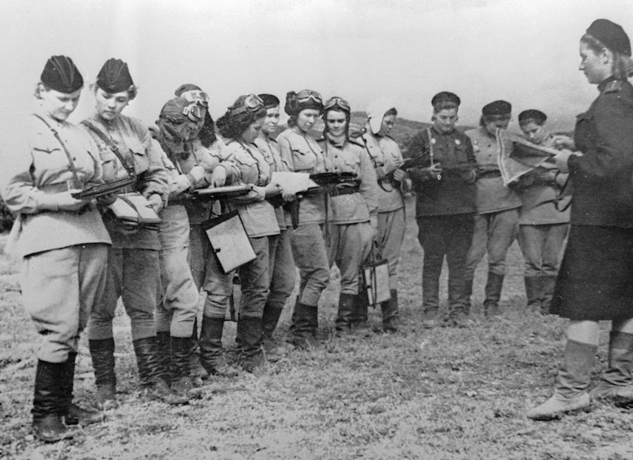

Наварасійск — горад герой!
Пасля таго як савецкія войскі сарвалі нямецкі план правядзення наступальных аперацый на каўказскім напрамку,
гітлераўскае камандаванне пачатак атакі на Наварасійск, каб з яго захопам пачаць паэтапна прасоўвацца ўздоўж паўднёвага
ўзбярэжжа Чорнага мора.

Для абароны Наварасійска 17 жніўня 1942 году быў створаны Наварасійскі абарончы раён, у які ўваходзілі 47-я армія,
маракі Азоўскай ваеннай флатыліі і Чарнаморскага флоту. У горадзе актыўна ствараліся атрады народнага апалчэння, было
пабудавана звыш 200 агнявых абаронных кропак і камандных пунктаў, была абсталявана паласа процітанкавых і проціпяхотных
перашкод даўжынёй больш за 30 кіламетраў.
28 КВ.КМ
складала плошча Малой Зямлі
17 680 ІМЕНАЎ
загінуўшых абаронцаў устаноўлены на сённяшні дзень

У памяць аб падзеях ваенных гадоў на тэрыторыі плацдарма Малая Зямля ў 1982 годзе адкрылі аднайменны мемарыяльны
комплекс. Кампазіцыя з граніту і бронзы, якая ўтварае нахільную трохкутную арку, нагадвае нос дэсантнага карабля,
застылага ў імклівым рыўку з мора на бераг. На левай баку знаходзіцца скульптурная Шматфігурнасць група «Дэсант»:
камандзір, марак, пяхотнік і дзяўчына-санінструктар. Супрацьлеглы борт карабля сыходзіць у моры, на ім змешчаны барэльеф
- байцы, гатовыя да нападу.